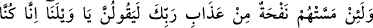
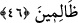
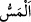

kulaklarını sağır kılmıştır. Onun için kendisiyle îkaz edildikleri şeyleri işitmezler.
İşittirmek, yaratılmışlara değil Allâh’a âittir. Nitekim Allah Teâlâ: “Allah onlarda bir
iyilik olduğunu bilseydi, elbette onlara işittirirdi.” (el-Enfâl, 8/23) buyurmuştur.
46. Andolsun, onlara Rabbinin azabından ufak bir esinti dokunsa, hiç şüphesiz,
“Vah bize! Hakikaten biz zâlim kimselermişiz!” derler.
“Andolsun, onlara” kâfirlere “Rabb’inin azâbından ufak bir esinti dokunsa,” yâni
Allâh’a andolsun ki uyarıldıkları Allah Teâlâ’nın azâbından pek az bir şey bile onlara
dokunsa son derece üzülürler de “hiç şüphesiz” şaşkınlıkla “Vah bize! Hakikaten biz
zâlim kimselermişiz!” derler.” Yâni felâket ve musîbet çığlığı ile kendilerine yanarlar.
Duymazlıktan gelerek ve yüz çevirerek kendilerine zulmettiklerini îtiraf ederler. Bu
ifâde, inkârcıların tehdidin/azabın geleceği haberine hiç aldırmadıkları belirtildikten
sonra, tehdidin bizzat kendisinin gelmesinden çabucak etkilendiklerinin beyânıdır.
“__WORD__ dokunmak demektir. İnsana ulaşan bütün kötülükler hakkında kullanılır.
Âyetteki “__WORD__ kelimesi, rüzgar için “esinti”, azâb için ise “bir parça” anlamındadır.
Nitekim el-Kâmûs’ta böyle geçmektedir.
eş-Şihâb şârihi, şu hadiste geçen ifâdeyi esinti mânâsına yorumlamıştır: “Sizin
vakitlerinizde Rabb’inizden gelen rahmet esintileri vardır, dikkat edin ve ona
(gönlünüzü) açın.”[173]
Âyette işâret vardır ki gaflet ve şakavet ehli, ölümden sonra kendilerine Allâh’ın
azabının eserlerinden bir eser dokunmadıkça nebîlerin tenbihi ve velîlerin nasihati ile
dünyada gaflet uykusundan uyanmazlar. Çünkü, “insanlar uykudadırlar, öldükleri
zaman uyanırlar.”[174] Günahlarını îtiraf ederler, “yazık bize” diye bağrışırlar,
nefislerine zulmettiklerine ah vah ederek yanarlar. İster kendisine, ister başkasına olsun
zulüm felâketi celb eder ve nimetlerin elden gitmesine sebep olur. Şu halde mü’min
azâba ve felâkete sebep olacak şeylerden sakınsın. Kurtuluş ve rahmet kapısına gelsin.
Bu da mücâhede, hevâ ve hevese hâkim olmak, tâat ve takvâ yolunu seçmekle olur.
Rivâyet edilir ki sâlihlerden birisi ibâdete düşkün bir ihtiyar kadına: “Nefsine acı!”
dedi. Kadın şöyle cevap verdi: “Nefsime acımam, beni Mevlâ’nın kapısından
uzaklaştırır. Kim dünya ile meşgûliyetten ötürü Mevlâ’nın kapısından uzaklaşırsa
kendisini, mihnet ve belâların kucağına atmış olur.” Sonra ağladı ve şöyle dedi: “Şu iki
şey ne kötüdür. Başkaları tarafından geçilip geride bırakılmanın üzüntüsü ve ayrılığın
acısı.”
Geçilip geride bırakılmanın üzüntüsü şöyledir: İnsanlar kabirlerinden kalktıkları vakit
iyiler (ebrâr), hattâ iyilerin seçkinleri birer binitle geçerler. Onların hemen önlerinde de